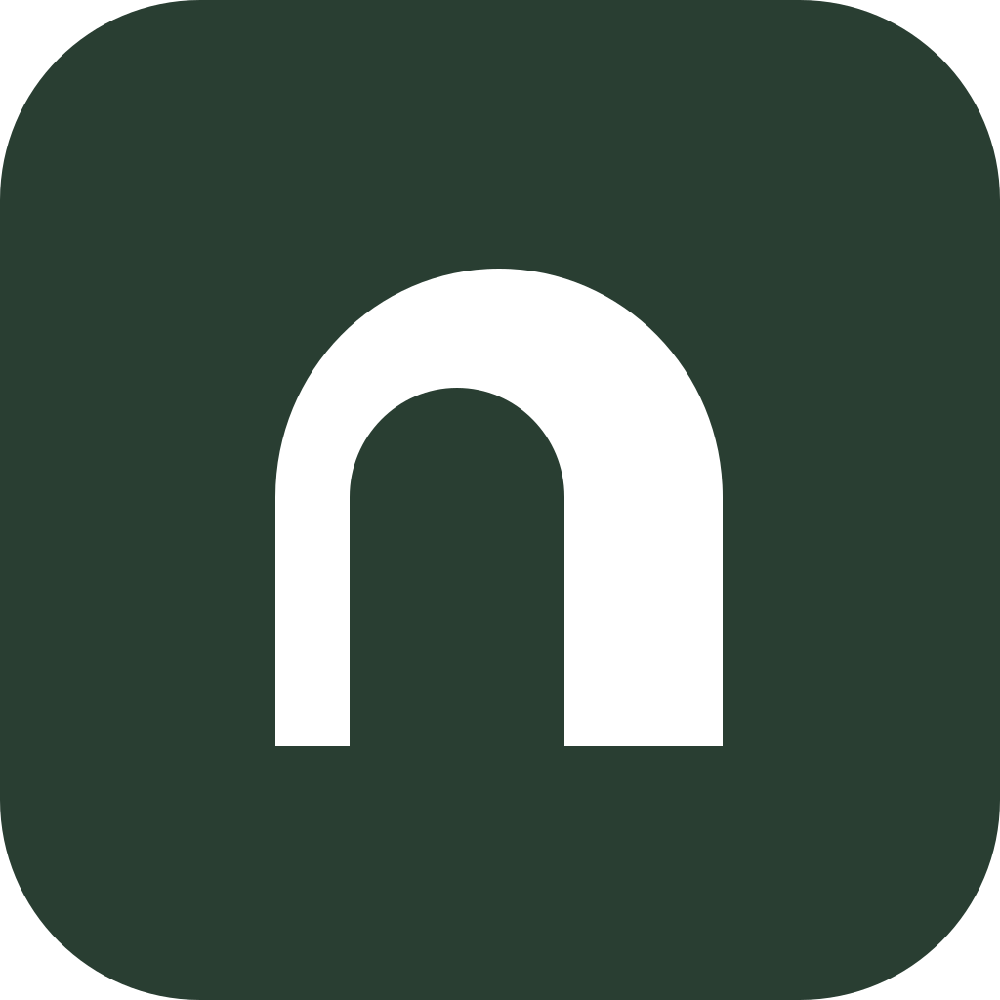
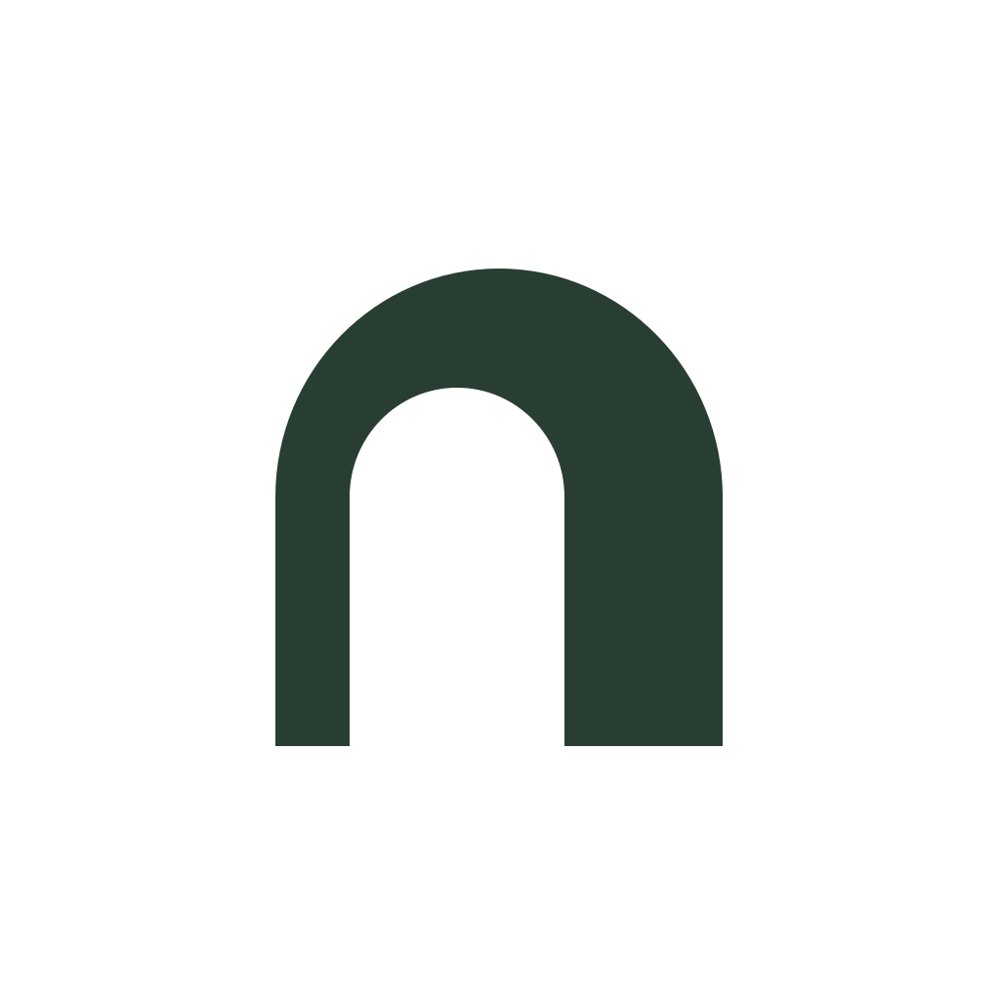
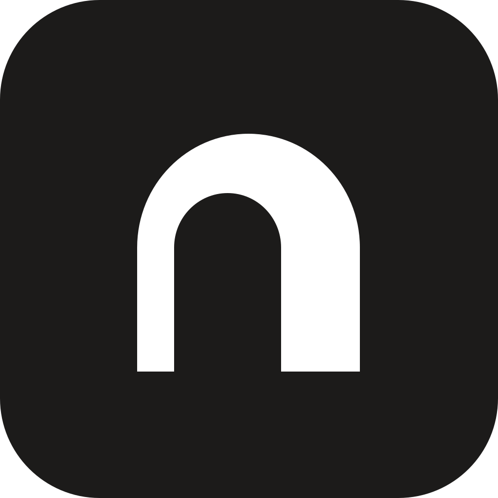

Nostos — Brand Kit
v1.0 / locked geometry
Primary mark
A threshold, and an n.
The visual tension comes from one deliberate detail: the outer arch is centered, while the inner doorway is shifted 4.20% left. That asymmetry is part of the mark—not a rendering error.
Every exported size in this package is generated from the same vector source. No favicon redraws, no alternate proportions.
PrimaryForest + paper

ReversedPaper + forest
MonochromeDark knockout
Light knockoutDark surfacesPaper
#FDF8F6
#FDF8F6
Forest
#293E32
#293E32
Ink
#1C1B1A
#1C1B1A
Clay
#A07859
#A07859